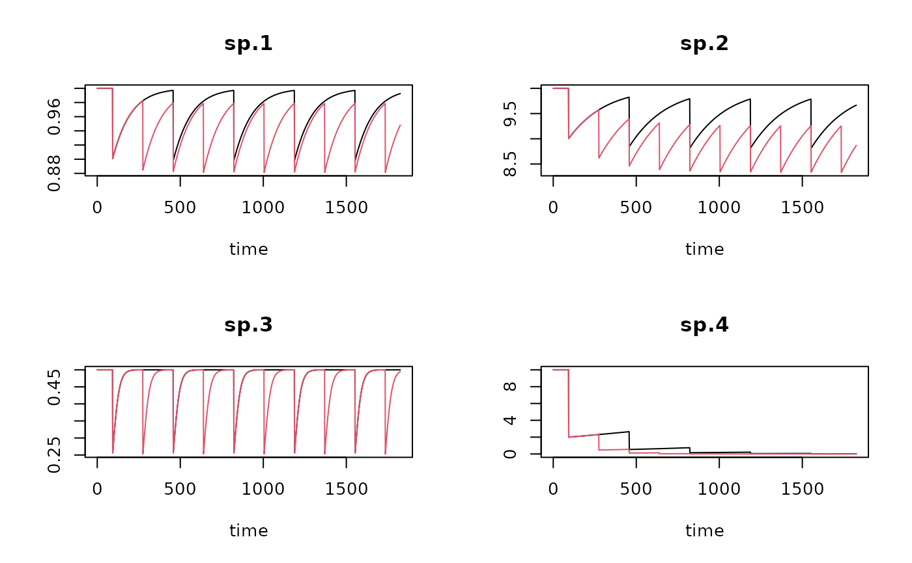

Function to obtain (time x trait) data by combining model output (time x taxon) with trait (taxon x trait) data.
getTraitModel.Rdget_trait_model combines (1) output of a fisheries model that describes how taxa densities evolve with time, with (2) a trait database for these taxa, to obtain how the traits evolve over time.
get_trait_model(model, trait, trait_class = NULL, trait_score = NULL,
taxon_names = colnames(model)[-1],
taxonomy = NULL, taxon_column = 1,
scalewithvalue = TRUE, verbose = FALSE)Arguments
- model
dynamic model output that describes how taxa change over time. This is a matrix with (time x taxon) information, such as generated from the function run_perturb. The first column should contain the time, and the other columns the taxon density over time, with the column names the actual taxon names. (see note for the consequences of this.)
- taxon_names
names of the taxa, one for each column in
model, except the first column. A vector of length = ncol(model) - 1. These names will be matched with the trait database, and optionally withweightif this is a two-columned matrix/data.frame.- trait
(taxon x trait) data or (descriptor x trait) data, in *WIDE* format, and containing numerical values only. Traits can be fuzzy coded. The trait matrix should have the name of the taxon in its first column (if
taxon_column=1); it is also allowed to have the taxon names as row.names (iftaxon_column=0).- trait_class
a vector with indices to trait levels for each modality in matrix
trait. The length of this vector should equal the number of columns oftraitminus the value oftaxon_column. If present, this -together withtrait_score- will be used to convert the trait matrix from fuzzy to crisp format.- trait_score
trait values or scores for each modality, a vector. Should be of the same length as
trait_class- scalewithvalue
when TRUE, will standardize with respect to total density, so that the average trait value is obtained (not the summed value).
- verbose
when TRUE, will write warnings to the screen.
- taxonomy
taxonomic information; first column will be matched with
taxon, regardless of its name. When present, the unknown traits will be estimated based on taxonomic closeness of each taxon.- taxon_column
position(s) or name(s) of the column(s) that hold the taxa (of data.frame
trait). The default is to have the first column holding the taxa. IfNULL, or0, then there is no separate column with names, so therow.namesof the dataset are used as taxon names.
Value
get_trait_model returns a time x trait density matrix of class deSolve (see ode), and contains, for each output time (rows), the traits as defined in trait.
Note
get_trait_model is based on the Btrait function get_trait_density. It returns an object of class deSolve and matrix (rather than a dataframe). This is to make use of the deSolve plotting facilities.
The names of the columns in model should have the taxon names, that are also found in the trait database. This can create a problem if the model output is a data.frame and the taxon names contain blancs. In this case, the names will have "." rather than " ".
This can be solved either (1) by making the names in the trait database consistent with the model output (use R-function make.names() to convert names with spaces to good names, as used in data.frames), or
(2) by adding, to object model an attribute called taxon.names that has the actual taxon names (in the order of the columns); (attributes(model)$taxon.names <- taxon.names).
See also
run_perturb for the disturbance model.
get_Db_model for deriving bioturbation and irrigation indices from a perturbation or logistic model.
Traits_nioz, for trait databases in packge Btrait..
get_trait_density, for the function on which get_trait_model is based.
get_trait for functions from package Btrait to extract traits
Examples
## ====================================================
## A small model - units per day
## ====================================================
# parameters
Trawl.pars <- data.frame(
taxon = c("sp.1","sp.2","sp.3","sp.4"), # name of taxa
r = c(0.01, 0.005, 0.05, 0.001), # rate of increase (/day)
K = c( 1, 10, 0.5, 10), # carrying capacity (density or biomass)
d = c( 0.1, 0.1, 0.5, 0.8)) # instantaneous depletion
# run the model for 5 years, output every day
times <- 0:1825 # time in days (consistent with pars)
# trawling frequency once / twice per year
trawl1 <- seq(from=92, by= 365, to=365*5)
trawl2 <- seq(from=92, by=182.5, to=365*5)
# run both models
trawl1run <- run_perturb (parms = Trawl.pars,
times = times,
events = trawl1)
trawl2run <- run_perturb (parms = Trawl.pars,
times = times,
events = trawl2)
plot(trawl1run, trawl2run, lty=1)

##-----------------------------------------------------
## Fuzzy-coded traits
##-----------------------------------------------------
# Note: no data for "sp.4"
Btraits <- data.frame(
taxon = c("sp.1","sp.2","sp.3","sp.5", "sp.6"),
T1_M1 = c(0 , 0 , 0 , 0.2 , 1),
T1_M2 = c(1 , 0 , 0.5 , 0.3 , 0),
T1_M3 = c(0 , 1 , 0.5 , 0.5 , 0),
T2_M1 = c(0 , 0 , 1 , 0.5 , 1),
T2_M2 = c(1 , 1 , 0 , 0.5 , 0)
)
# The metadata for these traits (meaining of Btraits columns)
Btraits.lab <- data.frame(
colname =c("T1_M1","T1_M2","T1_M3","T2_M1","T2_M2"),
trait =c("T1" ,"T1" ,"T1" ,"T2" ,"T2"),
modality =c("M1" ,"M2" ,"M3" ,"M1" ,"M2"),
score =c(0 , 0.5 , 1 , 0.2 , 2)
)
##-----------------------------------------------------
## Small dataset: taxonomy
##-----------------------------------------------------
Btaxonomy <- data.frame(
species = c("sp.1","sp.2","sp.3","sp.4","sp.5","sp.6"),
genus = c( "g.1", "g.2", "g.2", "g.2", "g.3", "g.4"),
family = c( "f.1", "f.1", "f.1", "f.1", "f.2", "f.3"),
order = c( "o.1", "o.1", "o.1", "o.1", "o.2", "o.2"),
class = c( "c.1", "c.1", "c.1", "c.1", "c.1", "c.1")
)
##-----------------------------------------------------
## Trait changes for runs - average for each trait (crisp format)
##-----------------------------------------------------
# if verbose=TRUE, a warning will be given, as there is no trait information
# for sp4 - this affects the trait density for station "b"
TraitRun1 <- get_trait_model (
model = trawl1run,
trait = Btraits,
trait_class = Btraits.lab$trait,
trait_score = Btraits.lab$score,
verbose = FALSE)
TraitRun2 <- get_trait_model (
model = trawl2run,
trait = Btraits,
trait_class = Btraits.lab$trait,
trait_score = Btraits.lab$score,
verbose = FALSE)
attributes(TraitRun1)$notrait # species that was ignored
#> [1] "sp.4"
plot(TraitRun1, TraitRun2)
 ##-----------------------------------------------------
## Trait changes - keeping fuzzy scores
##-----------------------------------------------------
TraitRun1b <- get_trait_model (
model = trawl1run,
trait = Btraits)
attributes(TraitRun1b)$notrait
#> [1] "sp.4"
##-----------------------------------------------------
## Trait changes - keeping fuzzy scores -
## use taxonomic info to create unknown traits
##-----------------------------------------------------
TraitRun1c <- get_trait_model (
model = trawl1run,
trait = Btraits,
taxonomy = Btaxonomy)
attributes(TraitRun1c)$notrait
#> [1] NA
plot(TraitRun1b, TraitRun1c)
##-----------------------------------------------------
## Trait changes - keeping fuzzy scores
##-----------------------------------------------------
TraitRun1b <- get_trait_model (
model = trawl1run,
trait = Btraits)
attributes(TraitRun1b)$notrait
#> [1] "sp.4"
##-----------------------------------------------------
## Trait changes - keeping fuzzy scores -
## use taxonomic info to create unknown traits
##-----------------------------------------------------
TraitRun1c <- get_trait_model (
model = trawl1run,
trait = Btraits,
taxonomy = Btaxonomy)
attributes(TraitRun1c)$notrait
#> [1] NA
plot(TraitRun1b, TraitRun1c)